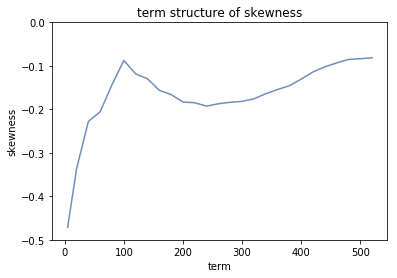

Discovering the Term Structure of Volatility Skew
In this research, we aim to extract a term structure from the implied volatility skewness under the Black-Scholes framework and S&P 500 adjusted close prices. With the daily close prices over the period of 1970-2018, we calibrate a local volatility function by fitting the BS-implied density based on the Dupire formula (which is the aggregation of a bunch of log-normal densities at each strike, since volatility is not constant and depended on strike) to the observed S&P 500 log return distribution.
We start by asssuming that the local volatility as a function of the log-in-the-moneyness for a fixed maturity window of business days.
Under the Black-Scholes framework with risk-free rate , a call option premium for is:
If we assume that there exists a probability density function , we have:
Taking partial derivative w.r.t. , we get the Dupire formula:
We can approximate the second-order derivative numerically:
We previously defined that . Given any , let us define such that:
We define as the period log return, and that . Based on chain rule:
So in conclusion we have:
The goal is to find the optimal volatility function such that fits to the historical distribution of . Here we use a quadratic form for :
Using sum of square as the objective function, we obtained a set of coefficients of , , and that fit the Dupire density to the empirical density of S&P 500 log returns. This following graph shows the skewness coefficient plotted against term windows.

We can observe that overall as the time-window increases, the skewness decreases (in absolute values). We also see that the skewness hit a local minimum (in absolute values) at , or 6 month time. This phenomenon is also observed in future trading, and could potentially be explained by the fact that market tends to recover from the left-skewed losses in 6 month time on average.
Click on this link to see the jupyter notebook.